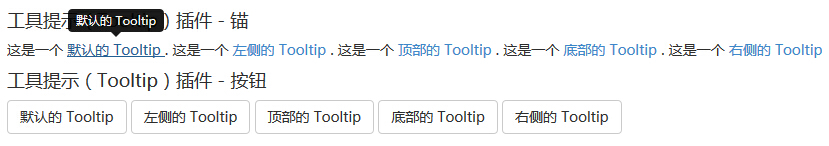
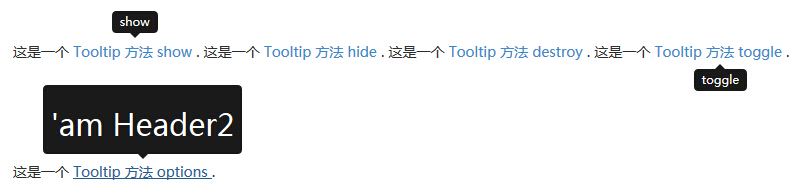
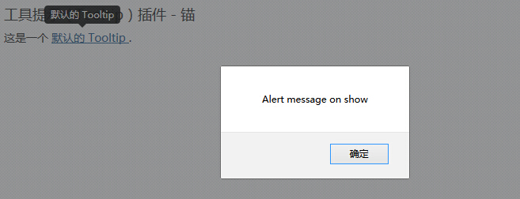

Bootstrap 提示工具（Tooltip）
当您想要描述一个链接的时候，提示工具（Tooltip）就显得非常有用。提示工具（Tooltip）插件是受 Jason Frame 写的 jQuery.tipsy 的启发。提示工具（Tooltip）插件做了很多改进，例如不需要依赖图像，而是改用 CSS 实现动画效果，用 data 属性存储标题信息。
如果您想要单独引用该插件的功能，那么您需要引用 tooltip.js。或者，正如 Bootstrap 插件概览 一章中所提到，您可以引用 bootstrap.js 或压缩版的 bootstrap.min.js。
用法
提示工具（Tooltip）插件根据需求生成内容和标记，默认情况下是把提示工具（tooltip）放在它们的触发元素后面。您可以有以下两种方式添加提示工具（tooltip）：
- 通过 data 属性：如需添加一个提示工具（tooltip），只需向一个锚标签添加 data-toggle="tooltip" 即可。锚的 title 即为提示工具（tooltip）的文本。默认情况下，插件把提示工具（tooltip）设置在顶部。
<a href="#" data-toggle="tooltip" title="Example tooltip">请悬停在我的上面</a>
- 通过 JavaScript：通过 JavaScript 触发提示工具（tooltip）：
$('#identifier').tooltip(options)
$(function () { $("[data-toggle='tooltip']").tooltip(); });
实例
下面的实例演示了通过 data 属性使用提示工具（Tooltip）插件的用法。
<!DOCTYPE html>
<html>
<head>
<title>Bootstrap 实例 - 提示工具（Tooltip）插件</title>
<link href="/bootstrap/css/bootstrap.min.css" rel="stylesheet">
<script src="/scripts/jquery.min.js"></script>
<script src="/bootstrap/js/bootstrap.min.js"></script>
</head>
<body>
<h4>提示工具（Tooltip）插件 - 锚</h4>
这是一个 <a href="#" class="tooltip-test" data-toggle="tooltip"
title="默认的 Tooltip">
默认的 Tooltip
</a>.
这是一个 <a href="#" class="tooltip-test" data-toggle="tooltip"
data-placement="left" title="左侧的 Tooltip">
左侧的 Tooltip
</a>.
这是一个 <a href="#" data-toggle="tooltip" data-placement="top"
title="顶部的 Tooltip">
顶部的 Tooltip
</a>.
这是一个 <a href="#" data-toggle="tooltip" data-placement="bottom"
title="底部的 Tooltip">
底部的 Tooltip
</a>.
这是一个 <a href="#" data-toggle="tooltip" data-placement="right"
title="右侧的 Tooltip">
右侧的 Tooltip
</a>
<br>
<h4>提示工具（Tooltip）插件 - 按钮</h4>
<button type="button" class="btn btn-default" data-toggle="tooltip"
title="默认的 Tooltip">
默认的 Tooltip
</button>
<button type="button" class="btn btn-default" data-toggle="tooltip"
data-placement="left" title="左侧的 Tooltip">
左侧的 Tooltip
</button>
<button type="button" class="btn btn-default" data-toggle="tooltip"
data-placement="top" title="顶部的 Tooltip">
顶部的 Tooltip
</button>
<button type="button" class="btn btn-default" data-toggle="tooltip"
data-placement="bottom" title="底部的 Tooltip">
底部的 Tooltip
</button>
<button type="button" class="btn btn-default" data-toggle="tooltip"
data-placement="right" title="右侧的 Tooltip">
右侧的 Tooltip
</button>
<script>
$(function () { $("[data-toggle='tooltip']").tooltip(); });
</script>
</body>
</html>结果如下所示：

选项
有一些选项是通过 Bootstrap 数据 API（Bootstrap Data API）添加或通过 JavaScript 调用的。下表列出了这些选项：
| 选项名称 | 类型/默认值 | Data 属性名称 | 描述 |
|---|---|---|---|
| animation | boolean 默认值：true | data-animation | 提示工具使用 CSS 渐变滤镜效果。 |
| html | boolean 默认值：false | data-html | 向提示工具插入 HTML。如果为 false，jQuery 的 text 方法将被用于向 dom 插入内容。如果您担心 XSS 攻击，请使用 text。 |
| placement | string|function 默认值：top | data-placement | 规定如何定位提示工具（即 top|bottom|left|right|auto）。 当指定为 auto 时，会动态调整提示工具。例如，如果 placement 是 "auto left"，提示工具将会尽可能显示在左边，在情况不允许的情况下它才会显示在右边。 |
| selector | string 默认值：false | data-selector | 如果提供了一个选择器，提示工具对象将被委派到指定的目标。 |
| title | string | function 默认值：'' | data-title | 如果未指定 title 属性，则 title 选项是默认的 title 值。 |
| trigger | string 默认值：'hover focus' | data-trigger | 定义如何触发提示工具： click| hover | focus | manual。您可以传递多个触发器，每个触发器之间用空格分隔。 |
| content | string | function 默认值：'' | data-content | 如果未指定 data-content 属性，则使用默认的 content 值。 |
| delay | number | object 默认值：0 | data-delay | 延迟显示和隐藏提示工具的毫秒数 - 对 manual 手动触发类型不适用。如果提供的是一个数字，那么延迟将会应用于显示和隐藏。如果提供的是对象，结构如下所示： delay:
{ show: 500, hide: 100 } |
| container | string | false 默认值：false | data-container | 向指定元素追加提示工具。 实例： container: 'body' |
方法
下面是一些提示工具（Tooltip）插件中有用的方法：
| 方法 | 描述 | 实例 |
|---|---|---|
| Options: .tooltip(options) | 向元素集合附加提示工具句柄。 | $().tooltip(options) |
| Toggle: .tooltip('toggle') | 切换显示/隐藏元素的提示工具。 | $('#element').tooltip('toggle') |
| Show: .tooltip('show') | 显示元素的提示工具。 | $('#element').tooltip('show') |
| Hide: .tooltip('hide') | 隐藏元素的提示工具。 | $('#element').tooltip('hide') |
| Destroy: .tooltip('destroy') | 隐藏并销毁元素的提示工具。 | $('#element').tooltip('destroy') |
实例
下面的实例演示了提示工具（Tooltip）插件方法的用法。
<!DOCTYPE html>
<html>
<head>
<title>Bootstrap 实例 - 提示工具（Tooltip）插件方法</title>
<link href="/bootstrap/css/bootstrap.min.css" rel="stylesheet">
<script src="/scripts/jquery.min.js"></script>
<script src="/bootstrap/js/bootstrap.min.js"></script>
</head>
<body>
<div style="padding: 100px 100px 10px;">
这是一个 <a href="#" class="tooltip-show" data-toggle="tooltip"
title="show">Tooltip 方法 show
</a>.
这是一个 <a href="#" class="tooltip-hide" data-toggle="tooltip"
data-placement="left" title="hide">Tooltip 方法 hide
</a>.
这是一个 <a href="#" class="tooltip-destroy" data-toggle="tooltip"
data-placement="top" title="destroy">Tooltip 方法 destroy
</a>.
这是一个 <a href="#" class="tooltip-toggle" data-toggle="tooltip"
data-placement="bottom" title="toggle">Tooltip 方法 toggle
</a>.
<br><br><br><br><br><br>
<p class="tooltip-options" >
这是一个 <a href="#" data-toggle="tooltip" title="<h2>'am Header2
</h2>">Tooltip 方法 options
</a>.
</p>
<script>
$(function () { $('.tooltip-show').tooltip('show');});
$(function () { $('.tooltip-hide').tooltip('hide');});
$(function () { $('.tooltip-destroy').tooltip('destroy');});
$(function () { $('.tooltip-toggle').tooltip('toggle');});
$(function () { $(".tooltip-options a").tooltip({html : true });
});
</script>
<div>
</body>
</html>结果如下所示：

事件
下表列出了提示工具（Tooltip）插件中要用到的事件。这些事件可在函数中当钩子使用。
| 事件 | 描述 | 实例 |
|---|---|---|
| show.bs.tooltip | 当调用 show 实例方法时立即触发该事件。 | $('#myTooltip').on('show.bs.tooltip', function () {
// 执行一些动作...
}) |
| shown.bs.tooltip | 当提示工具对用户可见时触发该事件（将等待 CSS 过渡效果完成）。 | $('#myTooltip').on('shown.bs.tooltip', function () {
// 执行一些动作...
}) |
| hide.bs.tooltip | 当调用 hide 实例方法时立即触发该事件。 | $('#myTooltip').on('hide.bs.tooltip', function () {
// 执行一些动作...
}) |
| hidden.bs.tooltip | 当提示工具对用户隐藏时触发该事件（将等待 CSS 过渡效果完成）。 | $('#myTooltip').on('hidden.bs.tooltip', function () {
// 执行一些动作...
}) |
实例
下面的实例演示了提示工具（Tooltip）插件事件的用法。
<!DOCTYPE html>
<html>
<head>
<title>Bootstrap 实例 - 提示工具（Tooltip）插件事件</title>
<link href="/bootstrap/css/bootstrap.min.css" rel="stylesheet">
<script src="/scripts/jquery.min.js"></script>
<script src="/bootstrap/js/bootstrap.min.js"></script>
</head>
<body>
<h4>提示工具（Tooltip）插件 - 锚</h4>
这是一个 <a href="#" class="tooltip-show" data-toggle="tooltip"
title="默认的 Tooltip">默认的 Tooltip
</a>.
<script>
$(function () { $('.tooltip-show').tooltip('show');});
$(function () { $('.tooltip-show').on('show.bs.tooltip', function () {
alert("Alert message on show");
})});
</script>
</body>
</html>结果如下所示：
